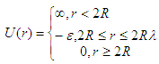

squarewell
Square well structure factor, with MSA closure
| Parameter | Description | Units | Default value |
|---|---|---|---|
| scale | Source intensity | None | 1 |
| background | Source background | cm-1 | 0.001 |
| radius_effective | effective radius of hard sphere | Å | 50 |
| volfraction | volume fraction of spheres | None | 0.04 |
| welldepth | depth of well, epsilon | kT | 1.5 |
| wellwidth | width of well in diameters (=2R) units, must be > 1 | diameters | 1.2 |
The returned value is a dimensionless structure factor, \(S(q)\).
This calculates the interparticle structure factor for a square well fluid spherical particles. The mean spherical approximation (MSA) closure was used for this calculation, and is not the most appropriate closure for an attractive interparticle potential. This solution has been compared to Monte Carlo simulations for a square well fluid, showing this calculation to be limited in applicability to well depths \(\epsilon < 1.5\) kT and volume fractions \(\phi < 0.08\).
Positive well depths correspond to an attractive potential well. Negative well depths correspond to a potential “shoulder”, which may or may not be physically reasonable. The stickyhardsphere model may be a better choice in some circumstances. Computed values may behave badly at extremely small \(qR\).
The well width \((\lambda)\) is defined as multiples of the particle diameter \((2 R)\).
The interaction potential is:

where \(r\) is the distance from the center of the sphere of a radius \(R\).
In sasview the effective radius may be calculated from the parameters used in the form factor \(P(q)\) that this \(S(q)\) is combined with.
For 2D data: The 2D scattering intensity is calculated in the same way as 1D, where the \(q\) vector is defined as
Fig. 110 1D plot corresponding to the default parameters of the model.
References
R V Sharma, K C Sharma, Physica, 89A (1977) 213.